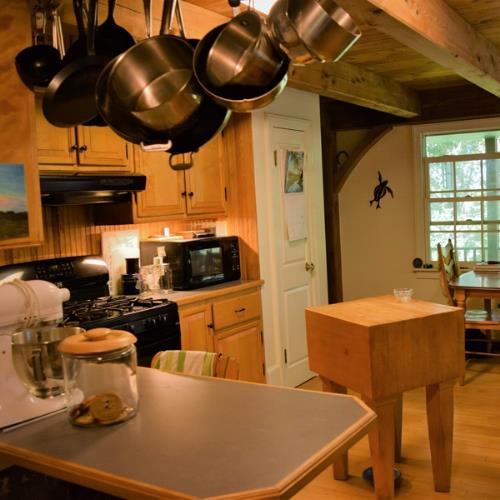
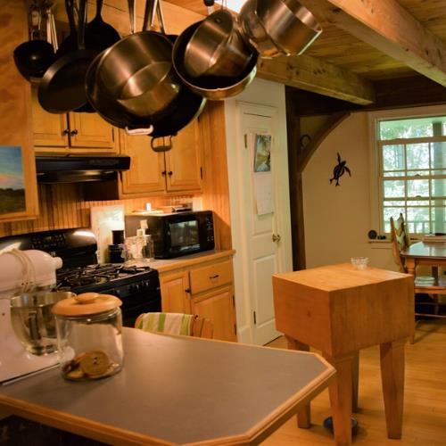
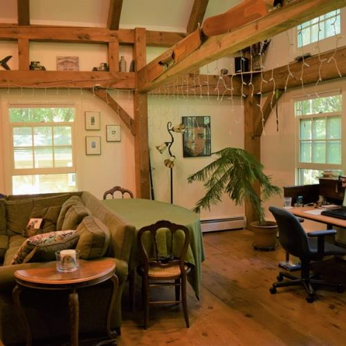
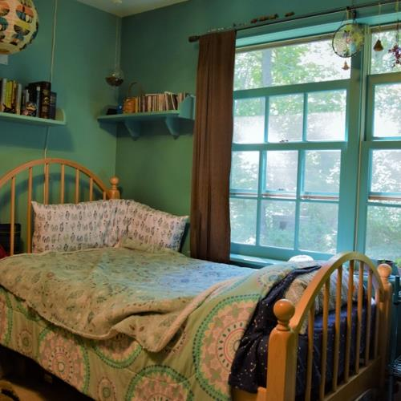
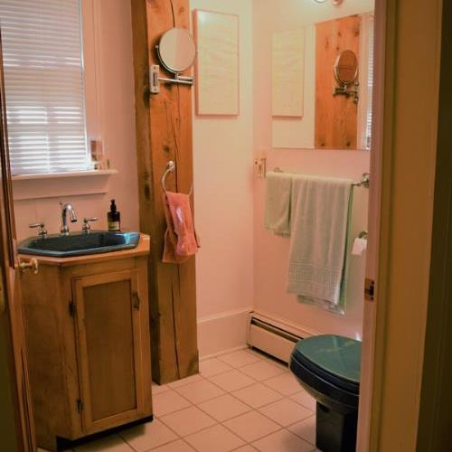

Kitchen
Refridgerator, stove, cooking utensils
Look up appliance ratings on energystar.com to find the most energy efficient products.
Refridgerator, stove, cooking utensils
Look up appliance ratings on energystar.com to find the most energy efficient products.
Television, couches, rugs
Find quality second-hand furniture at stores like Habitat for Humanity Restores.

Bedframe, mattress, sheets
Look into sustainably and/or locally produced textiles in places like Gryphon.

Shower, toilet, soaps
Reduce your chemical usage by purchasing eco-friendly bath products from companies like Lush and Mrs. Meyers.

it is also important to consider what type of water heater, furnace, washing machine, dryer, and septic system your home has. Sites like energystar.com can help you make decisions on upgrades for these larger appliances.
Whenever possible, you should try to fix your appliances before getting rid of them, recycle them (ie. bring to a local second-hand store) rather than throw away, and buy used rather than new.